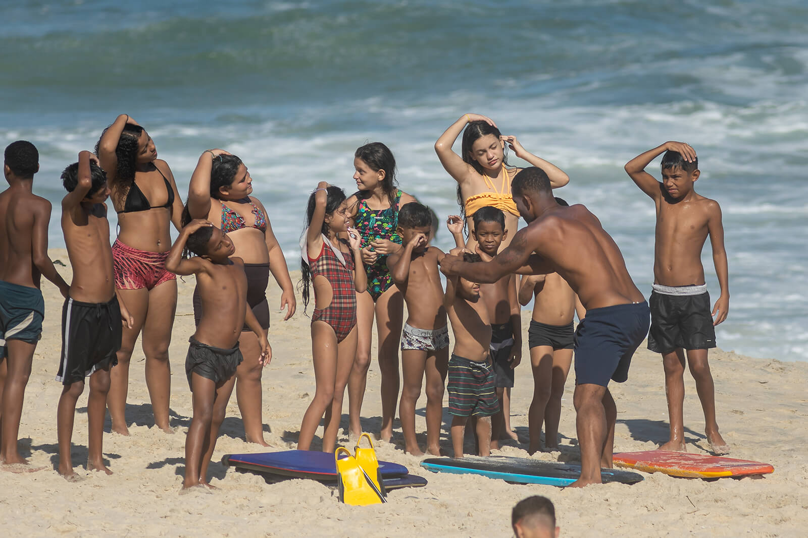
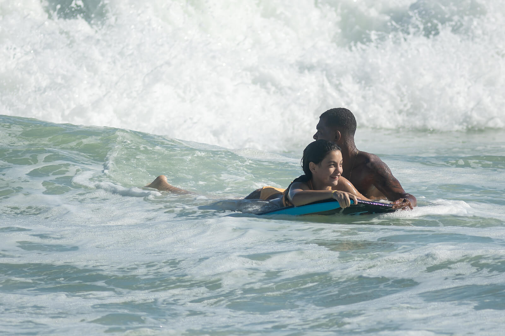
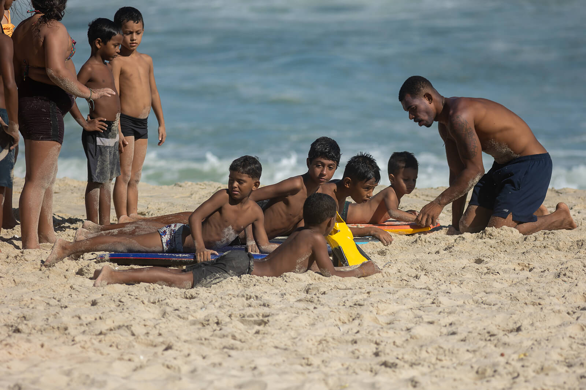
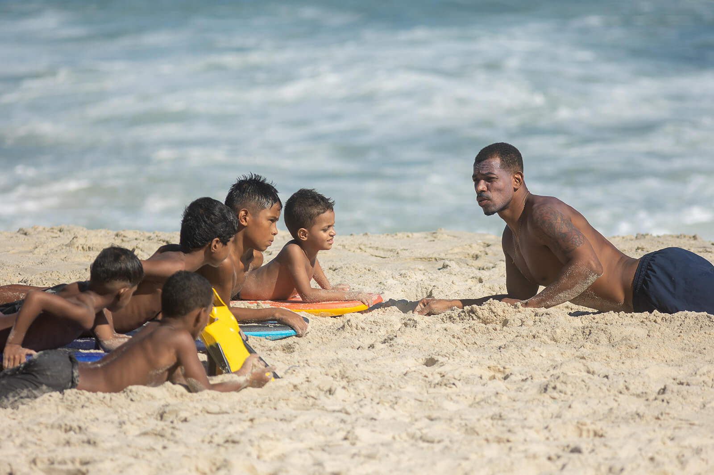
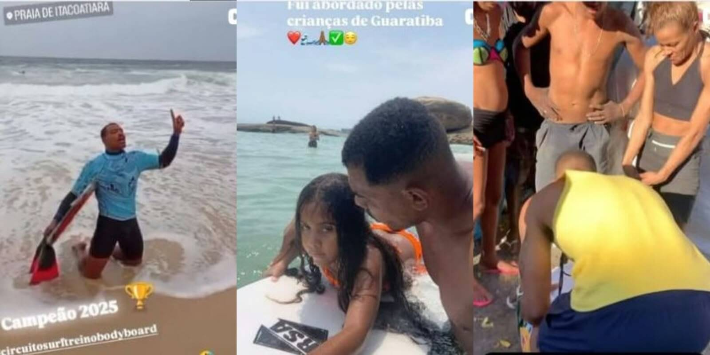
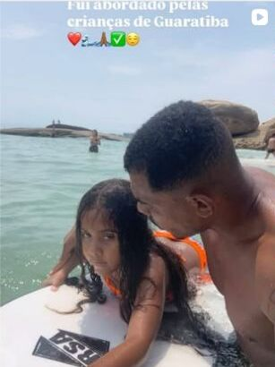
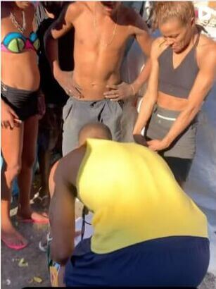

Surf e bodyboard
Atividades orientadas que aproximam crianças e jovens do esporte, da disciplina e da convivência com o mar.
O mar como caminho de inclusão e futuro.
Na Rocinha e em São Conrado, aproximamos crianças e jovens do esporte, da cidadania e do cuidado com o oceano por meio do surf e do bodyboard.
Registros das atividades publicados nas redes sociais do Instituto.
Conforme dossiê institucional de 27 de agosto de 2026.
Atividades divulgadas pelo Instituto em São Conrado.
Nosso território de origem e atuação.

O Instituto Renan Byruleibi de Surf é uma associação civil sem fins lucrativos criada na Rocinha. Nosso trabalho conecta esporte, convivência e cuidado para fortalecer a autoestima, a disciplina e os vÃnculos de crianças e jovens.
As atividades acontecem principalmente na Praia de São Conrado, em conexão com as famÃlias, voluntários e pessoas que acreditam no poder do esporte para abrir novos caminhos.
Aprender a respeitar o mar também é aprender a cuidar de si, do outro e do lugar onde vivemos.
O surf e o bodyboard são o ponto de encontro. A cidadania, a segurança e a responsabilidade com o oceano fazem parte de cada experiência.
Acompanhe no Instagram (abre em nova aba)Nossas frentes de atuação unem a prática esportiva à formação de valores e ao cuidado com a comunidade.
Atividades orientadas que aproximam crianças e jovens do esporte, da disciplina e da convivência com o mar.
Orientações sobre respeito ao oceano, leitura das condições do mar, prevenção e comportamento seguro.
Experiências que estimulam responsabilidade, cooperação, respeito e fortalecimento comunitário.
Educação ambiental voltada à relação com o oceano, à conscientização e à valorização do território.
Momentos registrados nas redes sociais do Instituto mostram a conexão entre as atividades, as crianças e a comunidade.




Renan Souza da Conceição, conhecido como Renan Byruleibi, é atleta de bodyboard e presidente do Instituto. Sua trajetória está ligada à Rocinha e ao mar de São Conrado.
Em abril de 2022, Renan auxiliou o resgate do salva-vidas Demétrius dos Santos, conhecido como Bigodinho, em condições severas no mar de São Conrado. O ato recebeu reconhecimento público.
O Instituto amplia esse compromisso: compartilhar com crianças e jovens o conhecimento do mar, a responsabilidade e novas possibilidades por meio do esporte.
Reconhecimento da Assembleia Legislativa do Estado do Rio de Janeiro pelo ato de heroÃsmo em São Conrado. O Projeto de Resolução nº 1.158/2022 identifica Renan e descreve o salvamento.

Homenagem na Câmara Municipal do Rio de Janeiro, com registro da solenidade pela TV Câmara Rio.

O perfil pessoal reúne registros de sua vida no esporte, atuação comunitária e reconhecimentos.
Somos uma associação civil sem fins lucrativos, com diretoria constituÃda, Ata de Fundação e Estatuto Social registrado.
Para consultar documentos institucionais ou conversar sobre uma parceria, entre em contato pelo perfil oficial. A equipe poderá fornecer as informações pertinentes, preservando dados pessoais.
Pessoas e organizações podem contribuir com tempo, conhecimento, recursos e apoio às atividades.
Converse com a equipe sobre como suas habilidades e sua disponibilidade podem contribuir com o Instituto.
Quero ser voluntário (abre em nova aba)Apresente sua proposta e conheça as necessidades das atividades para planejar um apoio alinhado ao projeto.
Quero ser parceiro (abre em nova aba)Fale com a equipe pelo canal oficial para conhecer as necessidades atuais e receber os dados de doação.
Conversar sobre doação (abre em nova aba)Veja os registros das atividades e entre em contato com o Instituto pelo Instagram oficial.
Esta página não contém formulário, ferramentas de análise de audiência, cookies de rastreamento ou incorporações de redes sociais. Ao abrir links do Instagram, YouTube ou de outros sites, você passa a utilizar serviços externos sujeitos às suas próprias regras de privacidade.
Para pedidos relacionados às imagens ou informações apresentadas nesta página, entre em contato pelo perfil oficial do Instituto.